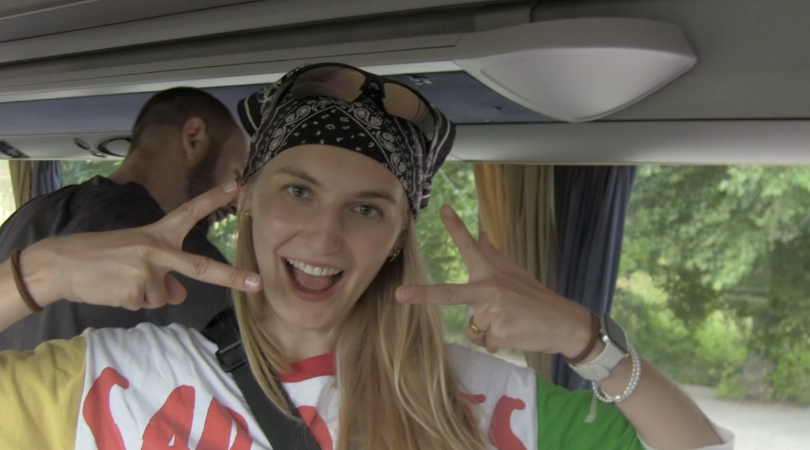

FIELD NOTE / 001
SENEGAL
03.2023 — 09.2023
Independent field study on curiosity behaviour in wild Guinea baboons, Centre de Recherche de Primatologie.
PLACEHOLDER — images/senegal-fieldwork.jpg
MAGGIE'S FIELD NOTES / 000 — HOMEPAGE
science communicator. media producer. biologist.
Maggie Slowinska MSc. — researching, recording, editing, looking for the next story.

PLACEHOLDER
images/senegal-fieldwork.jpg
PLACEHOLDER
images/project-hotspot18.jpg
curious about
everything that
moves, grows or
makes noise
USER: MAGGIE
LOCATION: SOMEWHERE BETWEEN FIELDWORK & EDITING
STATUS: CURIOUS
CURRENTLY EDITING...
ARCHIVE
stories, films, sounds & other experiments
01 / VIDEO
Die Suche nach dem Hotspot 18
01 / SOCIAL
Christmas in a Box
02 / VIDEO
Zwischen Alltag und Alb
03 / VIDEO
Schwäbische Alb
04 / AUDIO
Auf den Pfaden von Natur und Geschichte
05 / AUDIO
Ranger, Nutrias & Naturgeschichten
06 / SOCIAL
Reel für Mission Harz
07 / SOCIAL
Social-Media-Beitrag für Mission Harz
08 / SOCIAL
Social-Media-Beitrag für GreenCut-JUMP
09 / SOCIAL
Reel auf eigenem Kanal
10 / EXHIBITION
Sonderausstellung, Deutsches Primatenzentrum / Forum Wissen
Links pulled from Maggie's CV in reading order — worth a quick check that every title points to the right piece.
ARCHIVE / FIELDWORK
observations from somewhere between biology, media & curiosity.
FIELD NOTE / 001
03.2023 — 09.2023
Independent field study on curiosity behaviour in wild Guinea baboons, Centre de Recherche de Primatologie.
FIELD NOTE / 002
08.2022 — 12.2022
Behavioural observation and data collection on wild squirrel monkeys and tamarins, Estación Biológica Quebrada Blanco. Produced an image film for the research station.
FIELD NOTE / 003
— archived —
Part of Maggie's international field research experience. This chapter of the archive is still being sorted — more soon.
RESEARCH MODE: ON
What makes a good story? Probably curiosity.
01
I ask a lot of questions.
Digging into scientific sources, making sense of complex material, and structuring it so it actually holds together.
02
I make complicated things understandable.
Translating science and environmental topics into stories and media formats that people actually want to watch or listen to.
03
I like stories that start with a person.
Interviews, moderation, and the small encounters that turn a topic into something you remember.
I dig into complex topics and find the core of a story worth telling.
I develop that story into videos, reels, and other visual formats.
Interviews, audio, moderation, and podcast formats.
From the first idea through to production and release.
OPEN FILE
CREDENTIALS
Georg-August-Universität Göttingen
2021–2024 — M.Sc. Entwicklungs-, Neural- und Verhaltensbiologie Note 1,7
2017–2021 — B.Sc. Biologische Diversität und Ökologie Note 1,4, Auszeichnung
FILE / ABOUT.TXT
Maggie came to media through biology. Somewhere in the middle of her studies she got more interested in how scientific topics get told than in the topics themselves in isolation — and started looking for ways to bring the two together.
Today that means research on one end and video, audio, social media, interviews and exhibitions on the other: taking science and environmental topics from "technically correct" to "actually understandable," without losing what made them interesting in the first place. Field research in Senegal, Perú and Costa Rica taught her most of what she knows about patience, observation, and asking better questions.
SKILLS
TOOLS
LANGUAGES
END OF FILE — OR THE START OF ONE
Let's make something out of it.